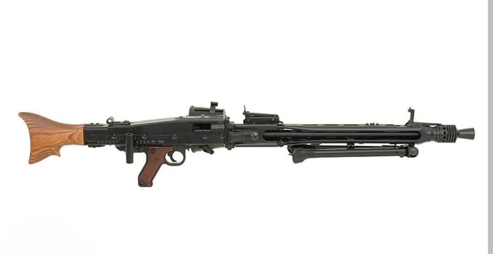
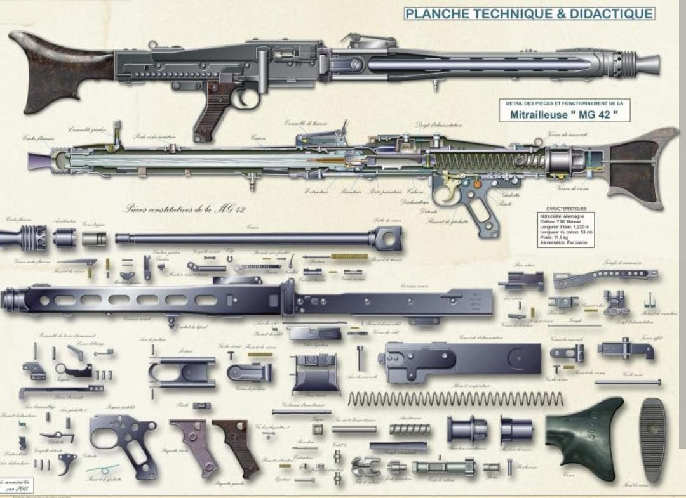
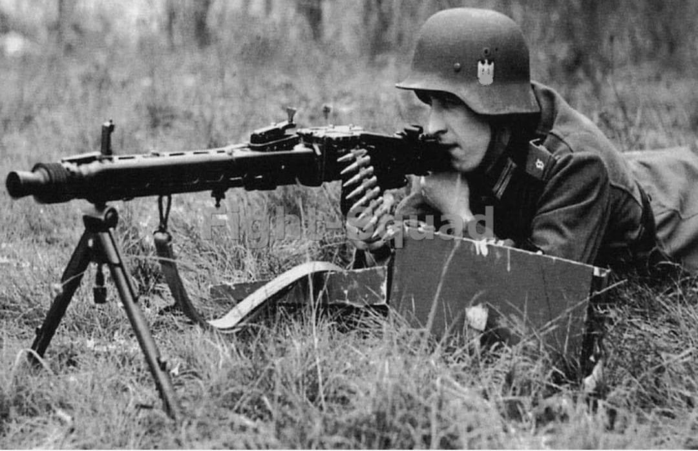
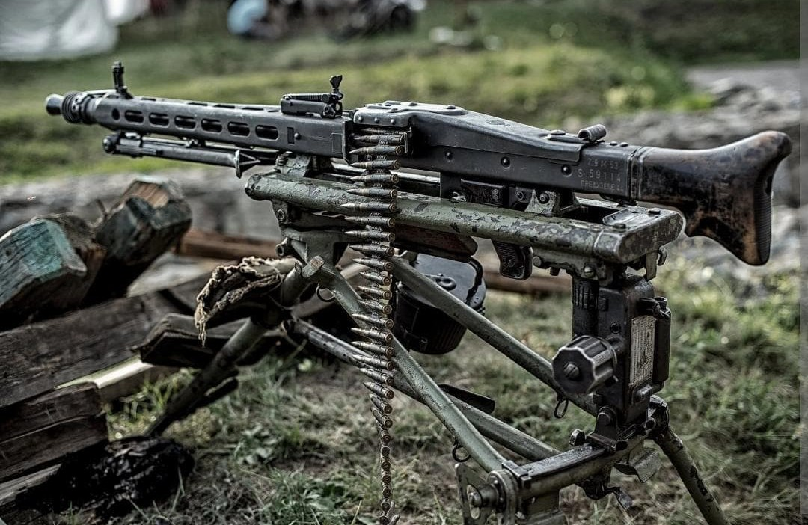
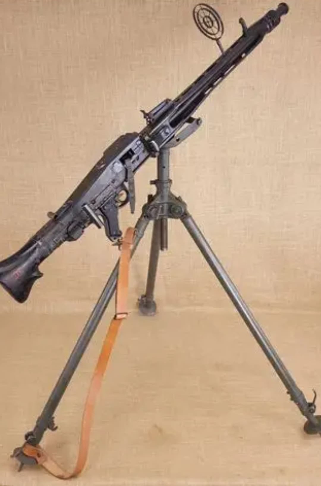

La MG 42 (Maschinengewehr 42), introduite en 1942, est considérée comme l’une des meilleures mitrailleuses de la Seconde Guerre mondiale. Conçue pour remplacer la MG 34, trop coûteuse et complexe à produire, elle révolutionne l’armement automatique grâce à sa cadence de tir exceptionnelle et sa fabrication simplifiée par emboutissage.
Sa cadence de tir de 1 200 à 1 800 coups/min produit un son continu terrifiant, lui valant le surnom de « Scie d’Hitler ». Elle influence directement les mitrailleuses modernes comme la MG3.
La MG 42 fonctionne par recul court du canon avec un verrouillage à galets, un système simple, robuste et fiable même dans la boue, le sable ou le froid extrême. Elle tire la cartouche standard 7,92×57 mm Mauser.
Elle peut être utilisée :


La MG 42 entre en service en 1942 en Afrique du Nord, puis sur tous les fronts : Russie, Italie, Normandie, Ardennes… Sa cadence de tir extrêmement élevée permet un appui-feu dévastateur, capable de clouer au sol des unités entières.
Le changement de canon, obligatoire toutes les 150–250 cartouches, se fait en 6 à 8 secondes, un record pour l’époque.

Développée par Werner Gruner chez Großfuß AG, la MG 42 est produite par plusieurs usines allemandes : Mauser, Gustloff-Werke, Steyr, MAGET. Sa fabrication par emboutissage réduit le temps de production de 150 à 75 heures.
Entre 1942 et 1945, environ 408 000 MG 42 sont produites.

Sur cette configuration, la MG 42 est montée sur un affût permettant une rotation complète et une élévation rapide, indispensable pour suivre des cibles aériennes à basse altitude. Ce type de montage était utilisé pour protéger les colonnes de véhicules, les dépôts, ou les zones sensibles.
La photo montre l’arme en position extérieure, typique des démonstrations, entraînements ou postes de tir improvisés. Les tambours et bandes visibles rappellent l’importance d’une alimentation continue pour maintenir un tir soutenu.
